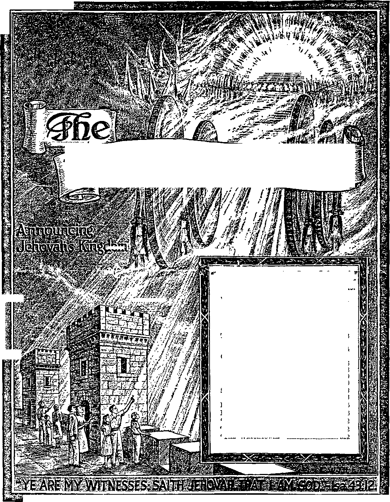

I
eicjif
’.i
B
1 hy
-Ezekiel 35:15.
Vol. LXX
Semimonthly
No. 21
NOVEMBER 1. 1949
CONTENTS
The World’s “Time of the End”......
The Consummation of This System
of Things .........................................
Close of the “Times of the
Gentiles” _____________________________________
Reckoning the Time.............................
End of the “Seven Times”________________
What Ended, and What Began ........
323
324
.. 326 ..328 .. 329 .. 330
Shortening the Days of Tribulation .. 333
Period of Education for Salvation
“Yet More Praise” Testimony Period 322
“Watohtowee” Studies “The Watchtower” _____
322
322
Published Semimonthly By
WATCH TOWER BIBLE & TRACT SOCIETY 117 Adams Street - - Brooklyn 1, N.Y., U.S A.
Officers
N. H. Knorr, President Grant Suiter, Secretary
"And all thy children shall be taught of Jehovah; and great shall be the peace of thy children.” - Iiaiah 34:13.
THE BIBLE CLEARLY TEACHES
THAT JEHOVAH is the only true God, from everlasting to everlasting, and is the Maker of heaven and earth and Giver of life to his creatures; that the Word or Logos was the beginning of his creation and his active agent in creating all other things; and that a cherub son of God rebelled against Jehovah and raised the Issue of His universal sovereignty;
THAT GOD created the earth for man, made perfect man for the earth and placed him upon it; that man yielded to the unfaithful cherub, or Satan, and willfully disobeyed God's law and was sentenced to death; that by reason of Adam’s wrong act all men are born sinners and without the right to life;
THAT THE LOGOS was made human as the man Jesus and suffered death In order to produce the ransom or redemptive price for obedient men; that God raised up Christ Jesus divine and exalted him to heaven above every other creature and clothed him with all power and authority as head of God’s new capital organization;
THAT GOD’S CAPITAL ORGANIZATION Is a Theocracy called Zion, and that Christ Jesus is the Chief Officer thereof and Is the rightful King of the new world; that the faithful anointed followers of Christ Jesus are Zion’s children, members of Jehovah’s organization, and are His witnesses whose duty and privilege it Is to testify to Jehovah’s supremacy and declare his purposes toward mankind as expressed in the Bible;
THAT THE OLD WORLD of Satan began Its “time of the end” A.D. 1914, and Christ Jesus has been placed by Jehovah upon the throne, has ousted Satan from heaven, and now proceeds to vindicate His name and establish the “new earth”;
THAT THE RELIEF and blessings of the peoples can come only by Jehovah’s kingdom under Christ, which has begun; that His next great act is to destroy Satan’s organization and establish righteousness completely in the earth; and that under the Kingdom the people of good-will surviving Armageddon will carry out the divine mandate to “fill the earth” with righteous offspring, and that the human dead In the graves will be raised to opportunities of life on earth.
“YET MORE PRAISE” TESTIMONY PERIOD
One bound book and one booklet, published by the Watch Tower Bible and Tract Society, on a contribution of 35c! Can you offer that to another person in order to help him to understand the Bible better and thereby learn to praise the Most High God more than he has ever known before ? If you can do so, then you should feel capable of joining in with Jehovah’s witnesses in the final special Testimony Period of the calendar year of 1949. This is entitled “Yet More Praise” Testimony Period and occupies the entire month of December, and the special offer the praisers of Jehovah God will make to all seekers of truth and righteousness will be the above combination of book and booklet. We have the organization to help all our Watchtower readers to take part in this grand, spiritually uplifting Testimony Period. So write us, if you need to, and we shall gladly assist in every way toward your getting started in thus publicly praising the Eving and true God yet more and more. Your report of work is of interest, so be pleased to turn it in at the close of December on our report form.
“WATCHTOWER” STUDIES
Week of December 4: “The World’s ‘Time of the End’,” fl 1-15 inclusive, also “Close of the ‘Times of the Gentiles’,” fl 1-5 inclusive, The Watchtower November 1, 1949.
Week of December 11; "Close of the ‘Times of the Gentiles’,” fl 6-22 inclusive, The Watchtower November 1, 1949.
Week of December 18; “Close of the ‘Times of the Gentiles’,” fl 23-30 inclusive, also “Shortening the Days of Tribulation”, fl 1-10 inclusive, The Watchtower November 1, 1949.
ITS MISSION
THIS journal Is published for the purpose of enabling the people to know Jehovah God and his purposes as expressed in the Bible. It publishes Bible Instruction specifically designed to aid Jehovah’s witnesses and all people of good-will. It arranges systematic Bible study for Its readers and the Society supplies other literature to aid In such studies. It publishes suitable material for radio broadcasting and for other means of public instruction in the Scriptures.
It adheres strictly to the Bible as authority for its utterances. It is entirely free and separate from all religion, parties, sects or other worldly organizations. It is wholly and without reservation for the kingdom of Jehovah God under Christ his beloved King. It Is not dogmatic, but invites careful and critical examination of Its contents in the light of the Scriptures. It does not indulge in controversy, and its columns are not open to personalities.
Notice to Subscribers: Remittances should be sent to office in your country in compliance with regulations to guarantee safe delivery of money. Remittances are accepted at Brooklyn from countries where no office is located, by international money order only. Subscription rates in different countries are stated below in local currency. Notice of expiration (with renewal blank) is sent at least two issues before subscription expire*. Change of address when sent to our office may be expected effective within one month. Send your old a* well a* new address.
Please address the Watch Tower Society in every case.
Offices Yearly Subscription Rate
America (U.S.}, 117 Adama St., Brooklyn 1. N.Y.
Australia, 11 Beresford Rd., Strathfleld, N.S.W.
British West Indies, 21 Taylor St, Woodbrook, Port of Spain. Trinidad $1.25 Burma, 39 Signal Pagoda Road, Rangoon Ra. 3/8
Canada, 40 Irwin Ave., Toronto S, Ontario
England, 34 Craven Terrace, London, W. 2
India, 167 Love Lane, Bombay 27 Ra 3/8
Jamaica, 151 King St, Kingston
Newfoundland, Post Box 521, St John’s
New Zealand, G. P.O. Box 30, Wellington, C. 1
Nigeria, West Africa, P.O. Box 695, Lagos
Philippine Republic, 104 Roosevelt Road,
San Francisco del Monte, Quezon City 2 pesos
South Africa, 623 Boston'House, Cape Town
T, Hawaii, 1228 Pensacola St, Honolulu 14
Translations of this journal appear In many languages.
ALL SINCERE STUDENTS OF THE BIBLE who by reason of infirmity, poverty or adversity wre unable to pay the subscription price may have The Watchtower tree upon written application to the publishers, made once each year, stating the reason tor so requesting it We are f;lad to thus aid the needy, but the written application once each years required by the postal regulations.
Printed in the United States of America
Entered as second-class matter at the post office at Brooklyn, N, P., under the Act of March 3, ISIS.
“THE WATCHTOWER”
The Watchtower is a magazine without equal in the earth, and is conceded this rank by all that have been faithful readers thereof during its more than seventy years of publication. The Watchtower has increased in importance with the progress of the years, and never has it been more valuable than today, at this world crisis, when the destiny of each intelligent human creature is being decided. The getting of correct information and instruction, just such as required for the times, to decide your course wisely to a happy destiny, was never more vital than now, for “where there is no vision, the people perish”. Informed persons well acquainted with the consistent contents of The Watchtower agree that those who want to gain life in peace and happiness without end should read, and study it together with the Bible and in company with other readers. This is not giving any credit to the magazine’s publishers, but is due to the great Author of the Bible with its truths and prophecies, and who now interprets its prophecies. He it is that makes possible the material that is published in the columns of this magazine and who gives promise that it shall continue to publish the advancing truths as long as it continues to exist for the service of the interests of his Theocratic Government. Carefully and prayerfully read this issue of The Watchtower. Then do not delay to mail in your subscription, that you may receive it regularly, twice a month, twenty-four copies the year. Subscription rates are shown above.
Vol. LXX November 1, 1949 No. 21
"Tell us, when shall these things be? and what shall be the sign of thy presence, and of the end of the world?"—Matt. 24: 3, Am. Stan. Ver., margin.
It failed to bring a righteous world of new heavens and a new earth. All the talk of recent American presidents and other politicians about bringing in a better and finer world created by men’s hands has proved to be blasphemous boasting and deceptive propaganda. Toward realizing such a man-made new world their millions of heroic dead who died in World War I did die in vain! Instead of dying for a new, they died for an old world whose end is now certain and near. Their very participation in global war from 1914 onward was a plain sign and incontrovertible proof of this. Therefore that year 1914 did not mark the establishment of a righteous government by man. The people of all nations continue to mourn and groan, proving that the same old wicked crowd are in authority and are bearing rule among men.
‘But men of good-will do not need to despair because of man’s failure. At Jehovah’s own foreordained date He fulfilled his promise and set up the Government needed for the new world to be created by the hands of Almighty God. Prophecy foretold that when that glorious event occurred a great announcement would be made in the heavens, to be picked up here on earth. Concerning this announcement we read: “And the seventh angel sounded; and there followed great voices in heaven, and they said, The kingdom of the world is become the kingdom of our Lord, and of his Christ: and he shall reign for ever and ever.” (Rev. 11:15, Am. Stan. Ver.) Since this kingdom of the Lord Jehovah God-is proclaimed to be “the kingdom of the world” and since he is to reign for ever and ever, the setting up of the kingdom in the hands of his Christ means that the promised new world is near and will last for all time. It means, too, that the accomplished end of this old world is near. Yes, and its end will be a great blessing for all men of good-will. Hence the discussing of this world’s end fills us with no dread. The invention of the atomic bomb does not make us fear global destruction.
4. What does the kingdom o£ the world’s becoming God’s mean? 323
JEHOVAH centuries ago marked A.D. 1914 as his appointed year for bringing his kingdom to birth. His purpose is to rid this earth of a corrupt, oppressive old world and to usher in a righteous new world in which obedient mankind will have the opportunity to live forever. The first thing required for bringing in a new world is to establish a new and righteous government for it. The difference this government means for the people of good-will is nicely stated by the proverb: “When the righteous are in power, the people rej oice; but when the wicked bear rule, the people groan.” (Prov. 29:2, An Amer. Trans.) If Jehovah God had left it to men to organize and establish the government guaranteeing the longed-for new world, the date 1914 would never have marked the birth of the righteous government.
2 Look back at 1914. Review what happened there among men. A global war for world domination, from the evil effects of which mankind has never recovered! At the end of that war the League of Nations was proposed, and in January of 1919 the Federal Council of Churches of America issued a proclamation which began: “The time has come to organize the world for truth, right, justice and humanity. To this end as Christians we urge the establishment of a League of Free Nations at the coming Peace Conference. Such a league is not merely a peace expedient; it is rather the political expression of the kingdom of God on earth. The League of Nations is rooted in the gospel. Like the gospel, its objective is ‘Peace on earth, good will toward men’. Like the gospel, its appeal is universal. The heroic dead will have died in vain unless out of victory shall come a new heaven and a new earth, wherein dwelleth righteousness.—2 Peter 3:13.”
3 The creating of new heavens and a new earth as foretold by the apostle Peter means the creating of a new world of righteousness. But the League of Nations, which began existing January 10, 1920, failed to bring peace on earth and good-will to men.
1. What required thing did God provide for the new world? When? 2. What League followed World War I? How was It recommended? 3. What did the outcome of the League show?
8 The Bible is the only book on earth that tells us of the end of this wicked system of things at a definite time. It is therefore the only book presenting us a grand message of hope of lasting relief from wickedness, oppression, death and the Devil’s organization. And to think that we are living at this marvelous time of change-over! We know this for sure, because Jesus Christ, the greatest of Jehovah’s prophets, foretold our time. He described it. He did so in reply to a question four of his apostles privately put to him. Here is what induced their question. He had just declared to the Jews at the temple in Jerusalem that their house was left desolate to them. As he was going out of the temple his disciples took occasion to show him the wonderful buildings that had been built in the temple area. Jesus quite shocked them •when he said: “See ye not all these things? verily I say unto you, There shall not be left here one stone upon another, that shall not be thrown down.” Later, as he sat by himself on the mount of Olives which overlooked Jerusalem and its temple, Peter, Andrew, James and John came and asked: “Tell us, when shall these things be? and what shall be the sign of thy presence, and of the end of the world?”—Matt. 23: 37 to 24: 3, Am. Stan. Ver., margin.
6 The apostles connected together the temple’s destruction (which also meant Jerusalem’s destruction) with Jesus’ second presence and the world’s end. Of course, from all he had taught them and also from what he said in this particular reply, they understood that his second presence vzould be a presence in his kingdom with him seated in the throne and wielding the scepter of pow’er. (Matt. 16: 27, 28; 25: 31) So they were in effect asking him to tell what the sign would be of his kingdom’s establishment, which meant this world’s end. They did not have in mind or ask about any end of the earthly ball upon which we live. They were taught and were sensible enough to know that the setting up of God’s kingdom by his Messiah Jesus did not mean the destruction of this earth but meant its transformation into a paradise for obedient man's home forever. When praying the prayer that Jesus taught them, they did not say, ‘Our Father who are in heaven, your name be revered! Your kingdom come! This earth be destroyed together with the sun, moon and all the stars in heaven.’ No; but they prayed for God’s kingdom by Christ to enforce perfect righteousness in the earth forever, saying: “Our Father in heaven, your name be revered! Your kingdom come! Your will be done on earth as it is done in heaven!” (Matt. 6: 9, 10, An Amer. Trans.; Basic English) If not our earth, what were they expecting to end?
7 When politicians hoodwink the people by solemn-
5. What book tells of the end? How do we know it Is so near?
6. Did the apostles ask about the end of our earth? Why?
7, What do religionists Interpret the Bible to mean on the end? ly talking of creating a better world of tomorrow by men’s hands, nobody, not even Roman Catholics and Protestants, take such politicians to mean the destruction of our globe and the creating of a new one on which to live. But when it comes to Christ and his apostles’ talking about the end of the world, those same religionists interpret their words to mean fiery destruction to our globe and the passing away of all our material creation into invisible nothingness. As a result the Catholic and Protestant population give way to all kinds of unscriptural fears in their religious miseducation. For example, The Associated Press under date of January 26, 1948, from Manila, Philippine Islands, reported on a series of earthquake shocks that shook Iloilo and told how a Roman Catholic woman “hysterically screams as she leads her child: ‘More are coining! Oh, Mother of God, could this be the end?’” (New York Times, January 26, 1948, page 1) In the year when World War II ended, the United Press, under date of September 18 (Tuesday), from Pasadena, California, reported that thirty men, women and children there were preparing themselves for the end of our earth, which they expected to explode three days from then, “like an atomic bomb,” the religious missionary in charge of them saying, “The end will be on Friday —and in a manner similar to the explosion of an atomic bomb.” (Camden, N.J., Evening Courier, September 18,1945) Their fearful religious expectations proved untrue, because the Holy Scriptures scientifically say, at Ecclesiastes 1:4: “The earth abideth for ever.”
8 From its very first issue in July, 1879, The Watchtower has taught the Bible truth on the destiny of our literal earth. In its opening issue, under the heading “Three Worlds”, The Watchtower said: “These three exist in the order of succession as above, no two at the same time, and the same planet, Earth, is the basis of all three. . . . The heavenly state of the saints, as the ‘Bride, the Lamb’s wife,’ and the earthly state of the nations, as the ‘blessed of the Lord,’ are facts of the world to come and in harmony with each other. If the saints are to rule the nations as promised, the nations must be there to be ruled. There are high and low, heavens and earth, in the future as well as in the past.” Through all the years since then, the Catholic and Protestant clergy have scoffed at Jehovah’s witnesses because these did not teach fiery destruction to our planet earth, but taught its abiding forever in paradise perfection under God’s heavenly kingdom.
THE CONSUMMATION OF THIS SYSTEM OF THINGS
’In the Greek in which the apostles’ question to Jesus was recorded they did not speak of any end of 8 From Its first Issue what has The Watchtower taught as to earth9 9. What does modern translation show as to the apostles’ question9 our planet earth. Modern translation of the Greek text of the Scriptures makes this fact very plain. The Catholic Westminster Version of 1938 reads: “Tell us when these things shall be, and what shall be the sign of thy coming [parousia, margin], and of the consummation of the world?” An American Translation of 1939 reads: “Tell us when this is to happen, and what will be the sign of your coming, and of the close of the age.” Young’s translation of 1863 reads: “Tell us, when shall these be ? and what is the sign of thy presence, and of the full end of the age?”—See the Revised Standard Version of 1946.
10 In the Greek text the word used by the apostles, at Matthew 24:3, and translated as “full end, consummation, or close”, is synteleia. This is a compound word, made up of the preposition syn meaning with, along with, in company with, together with and the noun telos meaning end. The compound word may therefore denote more than the mere end of one thing. The preposition syn denotes that a number of things, operations or conditions have been going on together or in company with one another. So their ending together would be a combined end or combination end, a coming to a common end. Several editions of Liddell and Scott’s Lexicon give as definitions of the word “the combination of parts to one end; combination of efforts; the consummation (of a scheme)”. If we use the expression “combination end” or “ending together”, it will bring out the correct thought. The apostles asked Jesus, “When shall these things be?” and this suggests things ending together or in combination. The apostles picked up the expression “end of the world” from Jesus, at Matthew 13:39, 40,49, and so they knew from how he described it that a number of things would end togethei' at that combination end or synteleia. In fact, this expression is used only six times in the apostolic writings, five times by the apostle Matthew and once by the apostle Paul.
11 But how about the world regarding whose combination end or consummation the apostles asked? The word they used is aion, and the modern Roman Catholic translators follow the Douay Version in translating it “world”. But the practice of most nonCatholic modern translators is to render it “age”, meaning a period of time in man’s history, whether having or not having datable bounds. “Age” may be suitable translation of aion in certain connections, yet it could not be the meaning at all times or in certain other connections. Ephesians 2:2 is a case of the latter kind. There Paul says to the Christians: “In time past ye walked according to the course [or aion] of this world, according to the prince of the power of the air, the spirit that now worketh in the 10. In Greek what word did they use? What does It mean here?
11. What word did they use for “world*’? How is Its meaning shown? children of disobedience.” There the word “world” translates the Greek word kosmos, whereas “course” translates the word aion. Thus the emphasis is upon the course pursued during a particular period of time, rather than upon the time-period itself. Paul again used aion, at Galatians 1:3, 4, to say: “Our Lord Jesus Christ . . . gave himself for our sins, that he might deliver us from this present evil world [aion].” Since Christians from Paul’s day till now have continued to live in the same general period of time in which evil or wickedness controls mankind, aion here cannot mean a time period. It must be the system of things which is evil and’from which Jesus Christ has delivered his consecrated followers.
11 The meaning “system of things” is also contained in the word aion when Paul uses it at Hebrews 1:1, 2, where he says: “God . . . hath in these last days spoken unto us by his Son, whom he hath appointed heir of all things, by whom also he made the worlds [aiones].” This cannot reasonably mean he made periods of time, but must be speaking of systems of things which the Most High God used his Son Jesus Christ to create. These systems could, of course, exist for a limited period of time or forever, depending upon the divine will. This meaning of aion also fits at Hebrews 9:25,26, where Paul speaks of Jesus’ sacrifice for sins and says: “Nor yet that he should offer himself often, as the [Jewish] high priest entereth into the holy place every year with blood of others; for then must he often have suffered since the foundation of the world [kosmos] : but now once in the end [synteleia] of the world [aiones; systems of things] hath he appeared to put away sin by the sacrifice of himself.”
ls When Jesus offered himself as a human sacrifice to God, it did bring a combination end to the systems of things that had operated toward the Jewish nation till then. It put an end to the acceptableness of further animal sacrifices in God’s sight. It ended the old Mosaic law covenant which God had made with Israel. It ended the system of prophetic types and shadows that had been enacted among the Israelites and their forefathers. Now a new covenant went into force between God and a new Israel, a spiritual Israel, upon which new nation the ancient types and shadows began fulfilling. That system of Jewish worship and relationship with God completely ended when Jerusalem was destroyed about forty years later. No more was there a material temple at the one-time holy city to which the Jews could gather and carry on as in old time. Truly, then, Jesus Christ appeared at a time when special systems of things that belonged to the Jews were ending together.
“ Since the apostles tied in the destruction of
12. How does Hebrews 1:1, 2 show the meaning of “alOn"?
13 How does Hebrews 9: 25, 26 further show Its meaning?
14. So what does “aldn" mean at Matthew 24:3, and why?
Jerusalem and its temple with Christ’s presence and the combination end, the word aion in Jesus' prophecy better has the meaning "system of things” rather than an age and absolutely does not mean our earthly globe.
13 But if the Romans destroyed Jerusalem A.D. 70, why does not the end about which the apostles asked apply to that complete end of the Jewish system of things that year and to which Paul refers at Hebrews 9: 25, 26 ? The reason why not is that the “presence” of Christ did not begin A.D. 70 nor did he then come into his kingdom power and glory. This only became true A.D. 1914. Hence when Jesus combined the destruction of Jerusalem and her temple with the end and with his own presence as reigning King, he must
15. Why did not that end o£ the “aldn" apply A.D. 70? When does It? have used Jerusalem and her holy place as pictorial of a similar religious organization in our day, namely, Christendom. Also he must have used the end of the Jewish system of things as a prophetic picture, to picture the end of the system of things that has obtained down till now. This end does occur during the time of his royal presence now. Thus, with prophetic understanding and with clear vision of the future, Jesus gave a twofold meaning to much of his prophecy. So he lifted his prophecy far beyond the terrible end that came on the cast-off Jewish nation to the end of Christendom and of aU the world to which she belongs, in our day. With this understanding of his prophecy we can appreciate more vividly that we are now living in the world’s consummation or “time of the end”.
THAT Jesus Christ did not begin his promised presence or parousia at the end of the Jewish system A.D. 70, Paul the apostle shows. Forty days after Jesus ascended to heaven to sit down there at God’s right hand, he began waiting until the “times of the Gentiles” should run out. On this the apostle says: “But when Christ had offered for all time a single sacrifice for sins, he sat down at the right hand of God, then to wait until his enemies should be made a stool for his feet.”—Heb, 10:12,13, Rev. Stan. Ver.
2 Now take note why Jesus’ time of waiting at God’s right hand did not end with the end of the Jewish system of things A.D. 70. It did not do so because the “times of the Gentiles” did not end there but continued on. This is emphasized in that in the year 70 Jerusalem was wiped out for the second time by Gentiles. That her destruction meant the continuance of the Gentile times for a long while after A.D. 70 Jesus explained in his own prophecy, saying: “There shall be great distress in the land, and wrath upon this people. And they shall fall by the edge of the sword, and shall be led away captive into all nations: and Jerusalem shall be trodden down of the Gentiles, until the times of the Gentiles be fulfilled.” (Luke 21:23,24) With the Gentiles’ taking the complete dominance of the earth there, certainly Jesus’ enemies were not made his footstool at that time. Plainly he made no effort at that time to make them such, but let them destroy Jerusalem in which Jehovah God had once placed his name, at his temple. Since Jesus Christ could not enter into his kingdom and begin his royal presence, and rule in the midst of his enemies, until the end of the “times of the Gentiles”, his presence and the world’s end of which he 1. At Hebrews 10:12, 13 what does Paul show on Christ's waiting? 2. Why did his waiting not end in 70 (A.D.)? How Is this shown? prophesied did not take place A.D. 70. His presence in Kingdom power began A.D. 1914. That was Jehovah’s year to bring his kingdom to birth.
s Jehovah’s kingdom by his Christ is a heavenly government, and the installing of his Christ must take place in the invisible heavens. Why, then, do we say with such positiveness that 1914 marks the Kingdom’s beginning and hence the beginning of Christ’s second presence or parousia? Because in 1914 the “times of the Gentiles” ended. Still, why should this fix the date for the kingdom of the world to become the kingdom of the Lord God and of his Christ’ ? Why should that be the date for Jehovah God Almighty to take his great power and begin to reign with respect to our earth? (Rev. 11:15-17, Am. Stan. Ver.) Because when the “times of the Gentiles” first began, Jehovah God let his typical kingdom on earth be overturned by the worldly Gentile powers. Those Gentile times did not start with Jerusalem’s destruction by Roman legions under General Titus A.D. 70. If the “times of the Gentiles” ran on after A.D. 70 because Jerusalem then got its second destruction, logically those Gentile times must have really begun in 607 B.C. That year Jerusalem was destroyed for the first time by the Gentiles, by the Babylonian armies of Emperor Nebuchadnezzar. She was trodden down under the Gentile heel and she never afterward regained absolute independence from Gentile rule under a ruler of King David’s line, even after she and her temple were rebuilt seventy years later, in 537 B.C.
4 It was when Jerusalem was first destroyed in 607 B.C. that God’s command concerning the symbols of active royal power, the crown and miter, was enforced: “And thou, 0 deadly wounded wicked one, 3. Why do we say so positively that 1914 marks the Kingdom's birth? 4. Why must the orNrujss’ times have begun In 607 B.C. ?
[Zedekiah] the prince of Israel, whose day is come, in the time of the iniquity of the end, thus saith the Lord Jehovah: Remove the mitre, and take off the crown; this shall be no more the same; exalt that which is low, and abase that which is high. I will overturn, overturn, overturn it: this also shall be no more, until he qome whose right it is; and I will give it him.” (Ezek. 21:25-27, Am. Stan. Ver.) The king here addressed was of David’s royal line through. King Solomon, and concerning Solomon’s reign we read: "Then Solomon sat on the throne of Jehovah as king instead of David his father.” (1 Chron. 29: 23, Am. Stan.Ver.) Thus the throne of Israel’s kings- of David’s line represented Jehovah’s throne, and Jehovah was the true and rightful King of ancient Israel. This accounts for Jesus’ command respecting ancient Jerusalem: “Swear not at all; neither by heaven; for it is God’s throne: nor by the earth; for it is his footstool: neither by Jerusalem; for it is the city of the great King.” (Matt. 5: 34, 35} In 607 B.C. the miter and crown symbolizing active royal power were removed from Israel’s king and the “throne of Jehovah” was overturned and removed, never to be restored on earth for a Jew to sit on; and the Gentiles were permitted to destroy the typical “city of the great King” and thus dominate the whole earth. In view of all this the “times of the Gentiles” must have begun that fateful year.
‘ So the beginning of the Gentile times meant that Jehovah’s kingdom and reign even toward that portion of the earth occupied by the Jews had ended or been suspended. But Jehovah had decreed that his kingdom arrangement with a Je-wish ruler sitting on the “throne of Jehovah” should be no more until the Messiah comes who has a right to it, at which time God would give it to him. This means that Jehovah’s kingdom by his Christ would be established just as soon as the Gentile times had ended. Otherwise stated, the end of the Gentile times meant the time for setting up God’s kingdom. This meant, too, the coming into Kingdom power of the Messiah, whose God-given right it is to rule.
6 Jesus said the “times of the Gentiles” would extend beyond A.D. 70, when Jerusalem was razed to the ground by Rome’s imperial armies. So when must those “times” end? Finding that out signifies finding definitely the date of the setting up of God’s kingdom and the coming into power of the Messiah and the beginning of his presence. Daniel’s prophecy, chapter four, shows the length of the Gentile times, namely, the length of seven symbolic times. Nebuchadnezzar, king of Babylon, was the Gentile monarch whom God used to execute judgment upon- unfaithful Israel and to destroy Jerusalem. God sent 1 2 a dream to Nebuchadnezzar and used Daniel to interpret it for him. By it Jehovah God revealed that the divine government would be without a manifest existence or would be temporarily inactive for “seven times”. During those symbolic “times” the Gentile ruling powers, represented by Nebuchadnezzar, would conduct themselves like unreasoning brute beasts. At the end of the "seven times” God’s kingdom would be restored with respect to the earth, and he would give the ruling power to the One to whom he willed to give it. When on earth, this One was considered the “lowest of men” and was put to death in disgrace at Calvary. That One was Christ Jesus, the descendant of King David.
' The arrangement for “seven times” was not something that the Gentile powers forced Jehovah to grant. It was something that he himself arranged for according to his own supreme will and wise purpose. But it definitely settles the question, that the restoration of God’s kingdom by Christ comes at the end of the Gentile times and puts an end to them. This restoration of the Kingdom is what the apostle Peter meant as he said to the Jews some weeks after Jesus ascended to the presence of the Lord God: “When the times of refreshment shall come from the presence of the Lord, he may send him who has been preached to you, Jesus Christ. For heaven indeed must receive him until the times of the restoration of all things, of which God has spoken by the mouth of his holy prophets who have been irom of old.” (Acts 3: 20, 21; Cath. Conf rat.) Peter’s words here prove that the Kingdom was not restored when Jesus ascended to heaven and sat down at God’s right hand. It could not have been so, for Jerusalem was destroyed thirtyseven years after Jesus ascended, thus causing Jerusalem to be trodden down still further until the Gentile times should be fulfilled.
8 Seven literal times passed over King Nebuchadnezzar when he suddenly became mad, imagining himself to be a grass-eating beast, and he was driven out into the open field to live like one: The “seven times” Nebuchadnezzar spent were seven years of twelve lunar months, or of 360 days to a year. That would amount to 2,520 days (7 X 360 days) for the seven literal times. Those 2,520 days of his "seven times” of madness were prophetic of the "times of the Gentiles” during which Jerusalem would be trodden down by mentally unbalanced Gentile powers, beast-like. In the case of the Gentile powers the “seven times” are not literal, but must be symbolic. God himself gives us the rule for interpreting the symbolism by saying respecting punishment upon Israel: “Each day for a year.” (Num. 14: 34) “I have appointed thee each day for a year.” (Ezek. 4:6) Hence the 2,520 days of Nebuchadnezzar’s madness 3 4 symbolized 2,520 years assigned to the “times of the Gentiles”. When did this long period of years begin?
RECKONING THE TIME
’ The Bible time-table connects up with the timetable of mundane history at the first year of Cyrus the Great, king of Persia. Cyrus, together with his uncle Darius the Mede,5 6 overthrew the empire of Babylon. On this the 1944 edition of The W estminster Dictionary of the Bible says in its table under “Chronology” (page 108): “B.C. 539 Cyrus takes Babylon.” The Encyclopedia Americana of 1929 also says under “Cyrus the Great” (page 373): “In 546 he conquered Croesus, the rich and powerful king of Lydia, and in 539 took Babylon, which did not offer much resistance, being torn by internal dissensions.” The Encyclopaedia Britannica (eleventh edition, of 1910) says under “Cyrus the Great” (page 707): “Why the war with Babylon, which had become inevitable, was delayed until 539, we do not know. Here too Cyrus in a single campaign destroyed a mighty state. The army of Nabonidus was defeated; Babylon itself attempted no resistance, but surrendered on the 16th Tishri (lOtht of October) 539, to the Persian general Gobryas.”
10 This Gobryas! is frequently identified as Darius the Mede. Daniel 9:1 and 11:1 speak of “the first year of Darius” as “king over the realm of the Chaldeans”. Babylon was overthrown in October of 539 B.C., but the ordinary Babylonian reckoning of a king’s reign was from the 1st of the month Nisan in the spring of the year.§ Hence the months from October of 539 to Nisan 1, 538 B.C., were referred to as the “beginning of kingship”. The first full year of Darius would therefore be from Nisan 1, 538 B.C.,
* Flavius Josephus in his Antiquities of the Jews (written about A.D. 93), Book 10, Chapter 11, paragraph 4, says : “When Babylon was taken by Darius, and when he, with his kinsman Cyrus, had put an end to the dominion of the Babylonians, he was sixty-two years old. He was the son of Astyages [called also Ahasuerus at Daniel 9:1], and had another name among the Greeks.” The name that Darius had among the Greeks and his exact kinship to Cyrus is stated by the Greek writer Xenophon, who died in 355 B.C. In his Cyropadia, i. 5. 2, Xenophon says: “Cyaxares, the son of Astyages and brother of Cyrus’s mother, succeeded to the Median throne.”
t Evidently a typographical error for “13th”, according to the Julian Calendar. This would be October 7,-539 B.C., according to the Gregorian Calendar we use today. See Babylonian Chronology, 626 B.C.-A.D. 45, by R. A. Parker and W. H. Dubberstein, of 1942. According to these authorities the later year, 537 B.C. had an intercalary sixth month (Elul) in Babylon, beginning September 5, Julian Calendar, or August 30, Gregorian Calendar. This would make the month Tishri (ordinarily the seventh month) begin October 5, Julian Calendar, or September 29, Gregorian Calendar, 537 B.C.
t But this Gobryas was still living five years later, in 534 B.C. —A. T. Olmstead, History of the Persian Empire, 1948, page 73.
§ In the Babylonian and Medo-Persian empires it was customary for the months or days between the death of a king and the follow-9. Where does Bible chronology connect up with the secular?
10. How do we arrive at the date of Cyrus' first year as king? to the end of the month Adar in 537 B.C., or, about, March 24,538, to March 11,537 B.C., Julian Calendar (or, March 18, 538, to March 5, 537 B.C., Gregorian Calendar).6 The first year of Cyrus is now usually given as 538 B.C. So if Cyrus reigned along with Darius, the first full year of Cyrus allowed more than two months in 537 B.C., for Cyrus to issue his decree for rebuilding the temple at Jerusalem.! But if Cyrus succeeded to Darius during or right after Darius’ first year, then the first full year of Cyrus would run from Nisan 1, 537 B.C., to the end of Adar, 536 B.C., or, about, March 12,537, to March 29, 536 B.C., Julian Calendar (or, March 6, 537, to March 23,536 B.C., Gregorian Calendar). This would allow sufficient months in the year 537 B.C. for Cyrus’ decree to get over all his kingdom, for contributions for the temple building to be made, for preparations and the journey to Jerusalem to be made by the Israelites, and for them to settle in their cities before the first day of the seventh month (Tishri) in 537 B.C. —Ezra 1:1; 2:68-70; 3:1, 6. See the footnote.!
11 In 538 B.C., or while Darius reigned, Daniel wrote: “In the first year of Darius the son of Ahasuerus, of the seed of the Medes, who was made king over the realm of the Chaldeans, in the first year of his reign I, Daniel, understood by the books the number of the years whereof the word of Jehovah came to Jeremiah the prophet, for the accomplishing of the desolations of Jerusalem, even seventy years.” —Dan. 9:1,2, Am. Stan. Ver.
12 Concerning these “desolations of Jerusalem” Jeremiah 25:11,12 said: “And this whole land [not just Jerusalem, but all Judah also] shall be a desolation, and an astonishment; and these nations shall serve the king of Babylon seventy years. And it shall come to pass, when seventy years are accomplished, that I will punish the king of Babylon, and that nation, saith Jehovah, for their iniquity, and the land of the Chaldeans; and I ■will make it desolate for ever.” (Am. Stan. Ver.) Referring to those same seventy years of desolation Jeremiah 29:10 said to the captive Jews at Babylon: “For thus saith Jehovah, After seventy years are accomplished for Babylon, I will visit you, and perform my good word toward you, in causing you to return to this place.” —Am. Stan. Ver.
13 After those seventy years of desolation the captive Israelites were restored, as Jeremiah 33:10,11 foretold: “Thus saith Jehovah: Yet again there shall be heard in this place, whereof ye say, It is waste, without man and -without beast, even in the cities of Judah, and in the streets of Jerusalem, that are desolate, without man and -without inhabitant and -without beast, the voice of joy and the voice of gladness.” (Am. Stan. Ver.) The land must thus lie desolate without human inhabitant and without domestic beast in order to enjoy an unbroken string of sabbaths for seventy years. (Jer. 32:43; 33:12; 36: 29) Those seventy years of desolation of the land of Judah ended in 537 B.C., after Cyrus, in the first year of his reign over Babylon, issued his decree. This occurred, says 2 Chronicles 36:21-23, “to fulfil the word of Jehovah by the mouth of Jeremiah, until the land had enjoyed its sabbaths: for as long as it lay desolate it kept sabbath, to fulfil threescore and ten years [or, seventy years]. Now in the first year of Cyrus king of Persia, that the word of Jehovah by the-mouth of Jeremiah might be accomplished, Jehovah stirred up the spirit of Cyrus king of Persia, so that he made a proclamation throughout all his kingdom, and put it also in writing, saying, Thus saith Cyrus king of Persia, All the kingdoms of the earth hath Jehovah, the God of heaven, given me; and he hath charged me to build him a house in Jerusalem, which is in Judah. Whosoever there is among you of all his people, Jehovah his God be with him, and let him go up.” (Am. Stan. Ver.) A faithful remnant of Jews or Israelites did go up that year.
“ Thus in 537 B.C. the desolation of the land of Judah and of Jerusalem ended. Since that closed seventy years of desolation, such years must have begun seven decades earlier in 607 B.C. and Jerusalem must have been destroyed that year by Nebuchadnezzar.
16 Hence the “times of the Gentiles”, or the symbolic “seven times”, did not begin when Pharaoh-nechoh of Egypt took Jehoahaz king of Judah captive and made Jehoiakim, the brother of Jehoahaz, king of Jerusalem instead. That was in 628 B.C. Neither did the “times of the Gentiles" begin after King Jehoakim died, when Nebuchadnezzar came to Jerusalem and removed Jehoiakim’s son Jehoachin from the throne. He carried Jehoiachin captive to Babylon and made Jehoiakim’s brother, Zedekiah, king of Jerusalem. That was in 617 B.C. (2 Ki. 23: 31 to 24:18) No; but those “times of the Gentiles” began in the eleventh year of Zedekiah’s reign, in 607 B.C., when he was dethroned and the land of Judah was desolated of man and beast. There Jerusalem and her realm began to be trodden down of the Gentiles.
END OF THE “SEVEN TIMES”
13 Jeremiah survived the destruction of Jerusalem in 607 B.C. He tells us that the Babylonians made a breach in Jerusalem’s walls on Thammuz 9, that is to say, the 9th day of the 4th Jewish month of the year. After this King Zedekiah and his men fled from Jerusalem, but only to be captured. Then, on the 10th day of the 5th Jewish month, that is, on Ab 10, the Babylonians came and began burning down the temple, the king’s palace, and the other houses of the city. They broke down its walls and took the surviving Jews captive to carry the most of them to Babylon hundreds of miles away. (Jer. 52:6-16) When was Ab 10 in 607 B.C.!
17 The Jewish year, being lunar, began with the first new moon nearest the spring equinox. Information submitted by the Nautical Almanak Society of Britain, dated December 11, 1945, tells us: “The Spring Equinox in the year 607 B.C. was on March 28th, and the nearest New Moon occurred on April 2nd, 23rd hour; any closer calculation would be meaningless.” But the Acting Director of the Nautical Almanac of the U.S. Naval Observatory, on August 1, 1946, gives us the date for the vernal equinox of 607 B.C. as March 27, at 7 pan. (Julian Calendar),* thus differing from the British reckoning by a day. It gives the date of the new moon nearest the spring equinox as April 2, at 10 p.m. (Julian Calendar),+ thus agreeing with the British calculation. It gives the 5th new moon, beginning the 5th Jewish month, Ab, as occurring at 10 a.m., of July 30 (Julian Calendar), or, July 23 (Gregorian), t This new moon would not be visible before 30 hours later at Jerusalem. Hence Ab 1, or the 1st day of the 5th Jewish month, did not begin before sundown of
• March 20, at 7 p.m., Gregorian Calendar.
of March 26, at 10 p.m., Gregorian Calendar.
t For the benefit of our readers in their calculations, we give the table submitted to us by the U. S. Naval Observatory and 16. On what day of what Jewish month did they destroy Jerusalem? 17. According to our calendar when was that day In 607 B.C.?
August 1 (Julian), or, July 25 (Gregorian). And so Ab 10, or the 10th day of the 5th month, would begin at sundown of August 10 and carry over to sundown of August 11, Julian Calendar, or, August 3 to 4, Gregorian Calendar.* That day in 607 B.C. the destruction of Jerusalem began, as above described.!
18 But complete desolation of the land of Judah did not begin August .11 (Julian), or, August 4 (Gregorian), 607 B.C. Nebuchadnezzar’s captain left the poorest people of the land remain to farm it and keep vineyards, and these did not take fear and flee down to Egypt until some time in the latter half of the seventh Jewish month of 607 B.C. (Jer. 41:1-4, which is based upon P. V. Neugebauer’s Astronomische Chronologie, a copy of which is in the New York city public library:
Julian Calendar
607 B.C.
Greenwich Time
|
Vernal Equinox |
: March 27 |
7 p.m. | |
|
New Moon |
(1st |
........ April 2 |
10 p.m. |
|
2d| |
________ May 2 |
Noon | |
|
ft |
3dJ |
____ June 1 |
3 a.m. |
|
if |
4th' |
_______ June 30 |
7 p.m. |
|
n |
5th |
________ July 30 |
10 a.m. |
|
n |
6th |
_______ Aug. 29 |
1 a.m. |
|
n |
7th] |
________ Sept. 27 |
3 p.m. |
|
“For dates this far in the past, the motions |
of the sun and the | ||
moon cannot be computed accurately enough to give the times of these phenomena more closely than within a few hours.”
* This agrees with Babylonian Chronolgy, 626 B.C.—A.D. 45.
At Luke 21: 20-24 Jesus predicted the second destruction of Jerusalem A.D. 70. Regarding this the Jewish historian Josephus says, in Wars of the Jews, Book 6, Chapter 8, that, after Jerusalem was set afire, “as all was burning, came that eighth day of the month Gorpieus, or Elul, upon Jerusalem."
The Encyclopaedia Britannica, volume 26, eleventh edition of 1910, says under “Titus” (page 1032) : “Vespasian, having been proclaimed emperor, returned to Italy, and left Titus to carry on the siege of Jerusalem, which was captured on the 8th of September 70.”
The date, September 8, must be only approximate. The month Elul in which Josephus says Jerusalem was destroyed is the 6th Jewish month. According to the table submitted to us by the Director of the Nautical Almanac of the U.S. Naval Observatory on August 5,1947, the new moon for the first Jewish month began at 8 p.m. on March 30, A.D. 70, and the new moon for the 6th month began August 24 at 1 p.m. Therefore, the 8th day of Elul on which Jerusalem was destroyed must have begun at sundown of September 2 (Julian), or, August 31 (Gregorian), A.D. 70.
But though Jerusalem was destroyed as a city that day, Josephus tells us its temple was destroyed by the Romans on the 10th of Ab, or August 5-6 (Julian), or, August 3-4 (Gregorian), A.D. 70, which day, he says, was the same day of the year that the temple was destroyed by the Babylonians in 607 B.C. (Wars of the Jews, Book 6, Chapter 4, paragraph 8) See our article, page 329 If f 16,17.
t In Wm. Kennon’s Astronomy, A Text Book for Colleges, 1948, page 98, he says the following with reference to the relationship between the Julian and the Gregorian calendars: “In 1800 the Julian Calendar gained another day, which put the Gregorian Calendar 12 days ahead. Since 1900 it has been 13 days ahead of the Julian Calendar.” When projecting the Gregorian Calendar back into the B.C. period it will be found that the Gregorian dates are behind the Julian dates for the identical events. For the seventh century B.C. the Gregorian dates fall 7 days behind the Julian dates. Thus August 10, 607 B.C., Julian Calendar, would be August 3, 607 B.C., Gregorian Calendar.
11-15; 42:7; 43:4-7) The new moon for that 7th month began September 27 at 3 p.m., Julian Calendar;* and so the land of Judah and Jerusalem was not left desolate without inhabitant until along in October, 607 B.C. From then on we reckon the Gentiles times as beginning.
19 Since the seven symbolic times began in October, 607 B.C., and ran for 2,520 years, the “times of the Gentiles” must end in October of 1914 (A.D.). There the time for Jehovah to let the Gentile powers of this earth exercise world domination without His interference ran out. There the time ended for Christ Jesus at His right hand to sit waiting to have his enemies made his footstool. This means that the time for Jehovah God to take his universal power and begin his reign toward this earth had come. The time had come for the birth of His kingdom by seating his Son Christ Jesus upon the throne to act as King for him with full power. There the vision seen by Daniel must be fulfilled, that the Son of man must come to Jehovah God, the “Ancient of days”, and be given “dominion, and glory, and a kingdom, that all people, nations, and languages, should serve him”. No more must the Theocratic Government be held in inaction, but the Kingdom must be restored and Jehovah God must give the power to him whose right it is to have it. There Jehovah must send the rod of his Son’s power out of Zion, with the command: “Rule thou in the midst of thine enemies.” (Dan. 7:13,14; Ezek. 21: 27; Ps. 110:1, 2) All this is what took place at the appointed date of the Most High God, namely, A.D. 1914.
WHAT ENDED, AND WHAT BEGAN
20 Here interesting questions arise. Someone will ask: Tf Jesus said that Jerusalem would be trodden down by the Gentiles until the times of the Gentiles are fulfilled, and if those seven times ended in October, 1914, why did not Jerusalem cease to be trodden down by the Gentiles in that month thirty-five years ago?’ Our answer is this: Jesus did not say Jerusalem would be rebuilt on earth by Jehovah’s people at the end of the Gentile times and that it would be freed of Gentile domination. The presentday city of Jerusalem over in Palestine is not the city of the great King Jehovah God, even though Christendom calls certain places over there “holy”. That city is doomed to destruction at the end of this world. But the true Jerusalem will live forever as the capital of Jehovah’s universal organization. We mean the New Jerusalem, of which Jesus Christ gave a symbolic vision to the apostle John on the isle of Patmos. It is heavenly, not earthly. It is spiritual, not material or man-made. It comes down from heaven to rule the
• Or, September 20 at 3 p.m., Gregorian Calendar. earth. Not by literally coining down, but by taking all the earth under its control and sending down its miraculous power from heaven to accomplish God’s will all over the earth.—Rev. 21:1-23.
21 Jesus Christ is the “King Of kings and Lord of lords” over that true Jerusalem. At the close of the Gentile times in 1914 he was enthroned as acting Ruler in the “city of the great King”, Jehovah. Thus, after an interruption of 2,520 years by Gentile powers, Theocratic Government over earth rose again to power in the New Jerusalem, never to be trodden down by the Gentiles. To the contrary, the time came in 1914 for those Gentile enemies to be made the footstool of the King of the New Jerusalem, for him to rule amidst them.—Ps. 110: 2.
22 But someone else asks: 'If the time for the Gentiles to tread down Jerusalem ended in 1914, why did great persecution against Jehovah’s witnesses start that year and culminate in 1918, when the enemies practically killed the Kingdom witness work?’ We answer: Persecution was committed by Christendom against the true Israel of God, the followers of Jesus Christ, but that did not affect or alter Christ’s royal position in heaven. During the progress of World War I from 1914 to 1918, the “war in heaven” was fought between Jehovah’s newly enthroned King and the Devil’s demon organization. The new King continued on his heavenly throne, but the Devil and his demons were cast down to this earth and reserved there for destruction in due time. The Devil and his demons proved unable to tread down the heavenly New’ Jerusalem, but were themselves put under the King’s feet.—Rev. 12:1-13.
23 The witnesses of Jehovah on earth were proclaiming the end of the Gentile times in 1914 and the setting up of His kingdom by Christ. Persecution was permitted to rage against these witnesses even to the point of killing their public Kingdom proclamation in 1918, for a certain reason. Not to show a further treading down of Jerusalem, but to prove to all the universe that all earthly nations, including Christendom, rejected Jesus Christ as earth’s rightful King. How could they prove that fact after he became the acting heavenly Ruler except by rejecting his Kingdom message and his ambassadors, his faithful followers? If the end of the persecution of Jehovah’s witnesses were to decide the matter, then the ‘treading down of Jerusalem by the Gentiles’ would not end until the battle of Armageddon, when all those Gentile enemies of the New Jerusalem will bite the dust in destruction. But to show that the King of New Jerusalem still continued independent above all Gentile power and dominion and above their god, Satan the Devil, Jesus revived the public activities of his remnant of faithful followers in 1919. Nothing during the thirty years since then has been able to stop or diminish their Kingdom preaching world-wide.
24 But if the Gentile times ended in October, 1914, why did the nations begin raging in world war on July 28? That day Austria-Hungary went to war against Serbia, and on August 1 Germany declared war on Russia, and other declarations of war by one country of Christendom upon another followed quickly. We answer: Most of the declarations of war in 1914 were made during the month of August, although declarations of war kept up through all the years until July 19, 1918, with Honduras’ declaring war on Germany that day. The month of August, 1914, corresponded with the month of August 2,520 years before, when ancient Jerusalem was taken over by the Babylonians, her temple and royal palace being destroyed August 3-4, 607 B.C., Gregorian Calendar.* But that did not mean that the Gentile times began there. In fact, Jerusalem was put under siege by the Babylonians a year and seven months before she fell. Likewise in Christendom there were rumblings of war that long a time before the conflict actually came at the end of July, 1914. So this does not mean that the Gentile times began at either the beginning of the siege of Jerusalem or at Jerusalem’s fall. The Gentile times began at the complete desolation of both Jerusalem and the land of Judah in October, 607 B.C. Accordingly they must end in the same month 2,520 years later, in October, A.D. 1914. By the end of that month ten European and Far-Eastern nations were at war.
“ Now we ask point-blank, Did the old world end A.D. 1914? We answer No! The old system of things and its Gentile nations are still very much alive, apparently stronger than ever before, being armed with the atomic bomb and other weapons of war to hold down the situation. So plainly the answer to the question must be No! And Jesus in his prophecy did not say the world would end at that date. Its “times of the Gentiles” ended then, but that did not end the world. But something did begin then for the doomed old world. What? Its “time of the end”, its consummation (synteleia), in which certain factors work together to a common end. So 1914 was the beginning of the end for this world. Its “time of the end” has a beginning and an ending. It had its beginning A.D. 1914, with “war in heaven”. It will also have an ending, namely, at the battle of Armageddon, where this world, invisible and visible, will be obliterated. The apostles asked Jesus for a sign of his presence, and his presence denotes a period of time. His presence corresponds with the consummation (syn-
• Or, August 10-11, 607 B.C., Julian Calendar.
24. Why Is outbreak of world war before October. 1914, no disproof? 25. Did the world end In 1914? What began for the old world? teleia) of this world, or its “time of the end”. (Matt. 24: 3, Am. Stan. Ver.-, margin) That the world entered its “time of the end” in 1914 we know, because the sign Jesus foretold began appearing right on time, at the end of the Gentile times. That was no accident, without a meaning.
26 That World War I of 1914 was the beginning of the “time of the end” Jesus’ prophecy shows. How! Jesus speaks of the close or terminus of the “time of the end” and uses another word, telos, meaning “an end accomplished; and so, the fulfillment, completion, accomplishment of any thing”. (Liddell and Scott Greek-English Lexicon, 1856) So, telling of things to happen before the “time of the end” sets in, Jesus told his apostles: “Ye shall hear of wars and rumours of wars: see that ye be not troubled: for all these things must come to pass, but the end [telos, or accomplished end] is not yet,” Or, as Luke reports his words: “But the end is not by and by.” But why is the accomplished end “not yet” in 1914, or, “not by and by”? Why is it not as soon as we reach the end of the Gentile times in 1914? Jesus tells why, saying: “For nation shall rise against nation, and kingdom against kingdom: and there shall be famines, and pestilences, and earthquakes, in divers places. All these are the beginning of sorrows.” (Matt. 24: 6-8; Luke 21: 9-11) Those things, which betoken his invisible presence, must occur before the telic end comes.
27 Exactly at the finish of the Gentile times in 1914 we find total nation risen up against total nation, and total kingdom against total kingdom, in a world war the like of which had not ever before taken place. This was accompanied as well as followed by earthquakes, famines, pestilences, with fearful sights and great signs from heaven. (Luke 21:10,11) But those things, said Jesus, were only the “beginning of sorrows”. They marked just the beginning of the world’s “time of the end”, but not the world’s accomplished end (telos). That this World War I was the start of the “time of the end” is shown by Daniel’s prophecy. He likens the democratic powers in that conflict to the “king of the south”, but the authoritarian or autocratic powers to the “king of the north”, with ecclesiastical Rome or the Vatican supporting the latter king. Then Daniel 11: 40 says: “And at the time of the end shall the king of the south push at him: and the king of the north shall come against him like a whirlwind, with chariots, and with horsemen, and with many ships; and he shall enter into the countries, and shall overflow and pass over.” Note that Daniel says it is at the “time of the end” that these military movements between both these kings or world forces take place. Seeing these begin in 1914 proves the world’s “time of the end” began in that notable year.
28 When the Gentile times for world domination ended that same year and God’s kingdom was born, it was quite fitting that the nations should rage against Jehovah’s enthroned King as a sign to prove they rejected him. That is why during this closing period of the world he must 'rule in the midst of his enemies’. He must be present in royal power during this period. So his presence during the time of the end of his enemies agrees with the fact that the consummation (synteleia) of the old world is a period of years.
28 That the consummation is a period is further proved by Jesus’ parables. After giving the parable of the wheat and tares and describing the gathering out of the tares at harvest-time and then the collecting of the wheat into the barn, he said: “The harvest is the end [synteleia; consummation] of the world; and the reapers are the angels. As therefore the tares are gathered and burned in the fire; so shall it be in the end of this world. The Son of man shall send forth his angels, and they shall gather out of his kingdom all things that offend, and them which do iniquity; and shall cast them into a furnace of fire: there shall be wailing and gnashing of teeth; Then shall the righteous shine forth as the sun in the kingdom of their Father.” (Matt. 13:39-43) For such harvest activities to be carried on and reach a climax, the consummation (synteleia) of the world must be a period of years from 1914 on.
30 This fact is further emphasized by Jesus’ parable of the dragnet. “The kingdom of heaven is like unto a net, that was cast into the sea, and gathered of every kind: which, when it was full, they drew to shore, and sat down, and gathered the good into vessels, but cast the bad away. So shall it be at the end [synteleia; consummation] of the world: the angels shall come forth, and sever the wicked from among the just, and shall cast them into the furnace of fire: there shall be wailing and gnashing of teeth.” (Matt. 13: 47-50) For such an operation to be carried on by the angels of Christ Jesus during his royal presence, the consummation (synteleia) of this old system of things would have to be an extended period of time from and after A.D. 1914, after the Gentile times end.
28. Among whom must Christ rule In this “time of the end"’ Why’ 29. What does the parable of wheat and tares prove on synfdleta?
30. How does the parable of the dragnet further prove this?
Thou wilt keep him in perfect peace, whose mind is stayed on thee; because he trusteth in thee. Trust ye in Jehovah for ever; for in Jehovah, even Jehovah, is an everlasting rock.
—Isaiah 26: 3, 4, A.S.V.
ALL during the time of Jesus’ absence in heaven he has been with his faithful followers on earth by means of the spirit or active force which he has sent them; also by means of his ministering angels, and by his loving interest in them. But he promised to be with them in a special way in the “time of the end”. He indicated this shortly before he ascended to heaven, when he said: “Go ye therefore, and teach all nations, . . . and, lo, I am with you alway, even unto the end [synteleia; consummation] of the world. Amen.” (Matt. 28:19,20) This meant he would be with them during the world’s consummation (synteleia) by his presence or parousia, for he would come into his kingdom when the Gentile times expired and the “time of the end” started. Then a teaching of all the nations by his faithful remnant of followers on earth would be carried on in a phenomenal way. They would be teaching the good news of the Kingdom and showing that it was established in 1914. For this closing work of his disciples on earth Christ Jesus in Kingdom power would be present with them. He foretold this and showed it would come after the close of World War I. For, after he predicted that global war as an opening feature of the “time of the end”, he said: “He that shall endure unto the [tfe/os], the same shall be saved. And this gospel of the kingdom shall be preached in all the world for a witness unto all nations; and then shall the end [telos; accomplished end] come.” —Matt. 24:13,14. '
2 Such a preaching of the Kingdom gospel by a remnant of his true followers and by their good-will companions could not be effected among all nations in a day. It would require a period of years. This again argues that the consummation (synteleia) stretches out over years. But note that this consummation or “time of the end” does have a finish or end. But such finish (telos) will not come until after the testimony by Jehovah’s witnesses to all the nations concerning the established Kingdom has been done. So we mark that the world’s “time of the end” opens with the “beginning of sorrows”, this being followed by an extraordinary witness to the King and Kingdom in all the habitable earth, and then it closes with a climax of sorrows. This makes it a time of “great tribulation, such as was not since the beginning of the world [/cosmos] to this time, no, nor ever shall be”.—Matt. 24: 21.
3 We mark, then, what we may call a “pause, or interlude”, in between the “beginning of sorrows” and the close of the “time of the end”. Jesus in his prophecy indicated this pause or interlude. Having told of the greatness of the tribulation upon the Devil’s world-organization, Jesus remarked: “And except those days [days denoting duration of time] should be shortened, there should no flesh be saved: but for the elect’s sake those days shall be shortened.” (Matt. 24:22) The days or period of tribulation began upon the Devil’s organization A.D. 1914, when Jehovah’s King was put in power and “war in heaven” began against his enemies, resulting in casting the Devil and his demons down to our earth. That “war in heaven” was attended by the “beginning of sorrows” here on earth, including World War I. Having now gotten all of the Devil’s organization down under his feet at his footstool, the earth, the victorious King could have pressed the war without stop to its conclusion in total destruction for all his enemies. That would have meant the battle of Armageddon would have followed at once. Such an unbroken continuance of hostilities against the Devil’s world organization and all under it would have left no flesh saved, spared or preserved. So the King took care for this preserving of flesh, particularly as the remnant of his faithful followers were still in the flesh on earth. At that time, too, they were in forced captivity to Satan’s Babylonish organization.
‘ “For the elect’s sake” the King shortened the days of tribulation upon the Devil’s organization. Howi By halting further violent action against that wicked organization until the telic end of the “time of the end”. This allowed for the remnant of God’s elect ones in the flesh to take up the work of preaching the Kingdom gospel in all the inhabited earth for a witness to all nations. By faithful participation in this they would prove their integrity to God and would make their calling and election to the heavenly kingdom with Christ sure. Their preaching also notifies the political, commercial and religious rulers of all the nations that we are in the world’s “time of the end” and that its grand finale is at hand, at which time the “vengeance of our God” will be poured out upon them.—Isa. 61:2.
PERIOD OF EDUCATION FOR SALVATION
5 The shortening of the days down here during our generation was prefigured twenty-five centuries ago by what took place upon Jerusalem in her own time of the end. During the years 609-607 B.C. the Babylonians from the north besieged that city. When the Egyptians to the south saw that Jerusalem’s fall would put their political sovereignty in danger and came to the city’s relief, the Babylonians or Chaldeans lifted the siege and turned against the advancing Egyptians. This permitted those who believed the prophet Jeremiah’s message to flee from Jerusalem to a place of refuge. Relieved now of the pressure, 4. How were the days of tribulation shortened? Why for the elect? 5. How was this Interlude foreshadowed in Jeremiah’s day?
the others of Jerusalem returned to their old evil habits, but Jeremiah warned them that the Chaldeans would come back, renew the siege and this time utterly destroy Jerusalem. This is actually what took place. Those who did not take advantage of the shortening of those days of horrible tribulation upon Jerusalem suffered for their unbelief of Jehovah’s warning by Jeremiah. (Jer. 37:1-12; 39:1-9) So in our own critical period of opportunity before the battle of Armageddon we should give heed, lest we come into the same dire consequences as those unbelieving Israelites. The shortening of the days of tribulation by this gracious interlude is a great mercy from G-od. Let us show appreciation of it by taking advantage of this merciful arrangement for our salvation.
’ Because the world crisis is here the G-od of mercy causes the knowledge necessary to salvation from destruction at Armageddon to be circulated as never before in world history. He foretold it would be so. Through Daniel he prophetically described the present “time of the end” and showed what would take place in the Devil’s organization then, especially as regards the 'firing of the north” and the “king of the south”. But regarding that same “time of the end” he also said: “And at that time shall Michael stand up, the great prince which standeth for the children of thy people: and there shall be a time of trouble, such as never was since there was a nation even to that same time: and at that time thy people shall be delivered, every one that shall be found written in the book.” And, indeed, at the very beginning of the “time of the end” Jehovah’s great prince Michael, that is to say, the Godlike Jesus Christ, stood up in his Kingdom power. He began the “war in heaven” against the Devil’s organization. But after ousting the Devil and his demons from heaven, he shortened the days of tribulation by halting further operations until the climax of the “time of trouble” at Armageddon. Why so? In order that a great educational campaign for salvation might be carried on.
7 The prophecy through Daniel points to that educational campaign by going on to say: “But thou, 0 Daniel, shut up the words, and seal the book, even to the time of the end: many shall run to and fro, and knowledge shall be increased.” (Dan. 12:1, 4) This means that many seekers of salvation, namely, Jehovah’s people, would run to and fro through the pages of God’s Word, doing so at the time that the inspired words of prophecy would be opened and the book of Daniel would be unsealed for examination to be understood. The ancient Septuagint Version’s translation of Daniel 12: 4 from the Hebrew into the Greek shows up this search for truth clearly. It reads: “And thou, Daniel, close the words, and seal the book to the time of the end. [synteleia]; until many are taught, and knowledge is increased.” (Bagster’s translation*) Of course, if many are to be taught and their knowledge is to be increased, then the words and book of Daniel’s prophecy must be opened and unsealed and this must take place in the period of the “end” or consummation (synteleia), beginning A.D. 1914. The King Christ Jesus is present as Jehovah’s great Teacher. He teaches the “children of thy people”, Daniel’s people being Jehovah’s people. As these studiously run to and fro through God’s unlocked Word in this time of the consummation, their knowledge is increased. And as they obey the King’s command to preach the Kingdom gospel to all the earth’s inhabitants in all nations before the telic end comes upon this old system of things, both knowledge and understanding spread out and out to all people of good-will everywhere.
8 As the days of this “time of the end” move rapidly to their close, a promise to Daniel nears fulfillment. What? That he should be resurrected from his cen-turies-long rest of death in the tomb and should return to earth to be one of the King’s visible princes under the heavenly kingdom. This is the promise that God’s angel conveyed to the faithful prophet over twenty-five centuries ago, saying: “But go thou, and rest; for there are yet days and seasons to the fulfilment of the end [synteleia]; and thou shalt stand in thy lot at the end [synteleia; consummation] of the days.” (Dan. 12:13, LXX, Bagster) When Daniel does stand up from death’s condition into his princely lot on earth, with what wonder and joy he will learn of the fulfillment of his book of prophecy! How eagerly he will take up the knowledge that will then be open to him concerning Jehovah’s purposes through His kingdom!
* What a wonderful period of opportunity we are living in, this “time of the end”! It is the time when the King finds his remnant serving as a “faithful and wise servant”. So he uses them to dispense the spiritual food to all who want knowledge of salvation. It is the time when the parable of the wise and foolish virgins is fulfilled, and also when the judgment of the King’s servants described in his parable of the talents given them occurs. Yes, the parable of the sheep and goats also comes true in this eventful time. So now in all nations we see the sheeplike people taking advantage of the educational campaign, learning of the King and taking their stand for him, alongside the remnant of his spiritual brethren. (Matt. 24:45 to 25:46) May an awareness of all these events tak-
• Vatican Manuscript No. 1209, which presents really Theo-dotion’s second century A.D. revision of the Septuagint on the book of Daniel.
8. What promise will soon be fulfilled to Daniel? How?
9. What sign does fulfillment of Matthew 24 45 to 25 : 46 constitute? ing place in proof of the Bang’s presence or parousia make us realize, too, that these things are also the composite sign of the “end of the world”. This sign marks the consummation of the old system of things under the Devil’s control.
10 May we, then, appreciate that this means we are living in the “time of the end”. We are already more than thirty-five years through it. The telic end of the Devil’s system of things visible and invisible is steadily drawing closer. Let us not be thrown off guard because the days of tribulation have been shortened by an interlude and because we do not at
10. What should we appreciate, and what should we do about It? present know the day or the hour of that destructive end upon the system of things. The end will come. It is not delayed. It is certain to come at God’s definitely fixed day and hour. (Matt. 24 : 36-39) When this Kingdom gospel has been preached in all the habitable earth for a witness to all nations, this “time of the end” which began with sorrows will finish with a complete end for the enemy system of things. Be it now our part to do our share in this educational campaign of Kingdom witness. Doing so, we shall prove worthy to enter into the righteous new world, which is promised to be a “world without end” under Jehovah’s everlasting kingdom by Jesus Christ.
MIGHTY Babylon squatted across the Euphrates river, impregnable behind its massive and towering walls. Why, the outer wall was 86 feet wide and 344 feet high, and around its base ran a moat of corresponding size from which the dirt to make the bricks of the wall had been taken. On top the wall was wide enough for a row of dwellings to stretch along each side, facing each other, and between them was an avenue wide enough for four-horse chariots to pass. The wall was laid out in a square. Each side was 14 miles long. Then there was an inner wall about 32 feet wide and 75 feet high. So spacious was this city of some two hundred square miles that its inhabitants could raise all their food within the walls, and the Euphrates running through and dividing the city into halves supplied water. On each side of the river ran quays, with walls separating the city itself from the continuous quays. How invincible it seemed to its inhabitants crouched behind its moated and double-walled boundaries!
Moreover, the sanctuaries and images of their many gods fed a feeling of security into their veins. So what matter if that Hebrew prophet Isaiah had said some two hundred years before that the Medes and Persians under Cyrus were going to overthrow Babylon ? And why be disturbed by the predictions of that other Hebrew prophet Jeremiah that Babylon would become perpetual desolation? (Isaiah 13; Jeremiah 25) Babylonia’s rulers were devoted to the gods. King Nabonidus was usually absent from the city of Babylon, but he had made his son Belshazzar coregent and stationed him in the capital, and Belshazzar was very religious and a heavy contributor to the various Babylonian sanctuaries. (“Belshazzar” means “the lord’s leader; prince of Bel”.) Hence the gods were with the city, should anything so impossible happen as the failure of the physical fortifications.
At this very moment in 539 B.C. the gods of Babylon were being honored by King Belshazzar. For sixty-eight years now the Jews had been held captive, and it certainly seemed that mighty Babylon would never fall. Jeremiah had said that Jerusalem’s inhabitants would be restored to it after a seventy-year desolation, but the collapse of Babylon so necessary to spring them from captivity seemed impossible. Why, just look in on this night’s feasting King Belshazzar has arranged for a thousand of his lords. The tipsy king has ordered that the vessels of gold and silver taken from Jehovah’s temple in Jerusalem by his grandfather Nebuchadnezzar be brought forth. And now the king and his lords and his consorts and concubines are drinking toasts to Babylon’s gods of gold, silver, bronze, iron, wood and stone. Does not the using of these vessels sacred to the worship of the God of the Hebrews, using them to toast Babylon’s gods, prove the supremacy of the latter? The Hebrews had been commanded by Jehovah to shun images of metal and wood and stone, but who was supreme now? The record of this impious feast reads:
“King Belshazzar made a great feast for a thousand of his lords, and drank wine before the thousand. Inflamed by the taste of the wine, Belshazzar gave orders to bring in the vessels of gold and silver, which his father [grandfather] Nebuchadnezzar had taken away from the temple at Jerusalem, that the king and his lords, his consorts and his concubines, might drink out of them. So they brought in the vessels of gold and silver, which had been taken away from the temple at Jerusalem; and the king and his lords, his consorts and his concubines, drank out of them. As they drank the wine, they praised the gods of gold and silver, bronze, iron, wood, and stone.”—Dan. 5:1-4, An Amer. Trans.
This profane use of the sacred temple vessels capped the wickedness of Belshazzar’s wild party of revelry. In his drunken state the king gloated that the supremacy of his demon gods over Jehovah was established. But wait! With sobering suddenness eerie fingers unattached to a body are scrawling strange handwriting on the wall! No apparition of alcohol-soaked brains, this! It throws a hush over the wild party as a wet blanket smothers fire. Belshazzar’s flushed face pales, alarm seizes him, his legs turn weak and his knees knock. As the first frightful shock passes the king finds his voice and screams for his diviners and enchanters and astrologers. Interpret the writing! But when they cannot the king’s face turns still paler and his alarm mounts, and his lords are at their wits’ end.
“That very hour, the fingers of a man’s hand appeared, writing on the plaster of the royal palace, opposite the lampstand. The king saw the palm of the hand as it wrote, and the king’s fresh colour paled, his thoughts alarmed him, the muscles of his thighs relaxed, and his knees struck one against another. Then the king cried aloud for the enchanters, the diviners, and the astrologers to be brought in. . . . But not one of-all the king’s sages could read the writing or explain the meaning of it to the king. At this king Belshazzar was greatly alarmed, his colour paled, and his lords were at their wits’ end.”—Dan. 5: 5-9, Moffatt.
The excited and frightened cries bring the queen-mother to the confused scene. With calm words she brings some measure of sanity to the bedlam: "Let not your thoughts alarm you, let not your colour go; within your realm there is a man in whom is the spirit of the gods divine.” She proceeded to acquaint trembling Belshazzar with the accomplishments of Jehovah’s prophet Daniel, and concluded with the suggestion: "Let Daniel be called, and he will explain the meaning of this.” After Daniel had been brought in and offered rewards if he succeeded in interpreting the writing, he responds: “Keep your gifts for yourself, and give your rewards to someone else! However, I will read the writing to the king and let him hear the meaning of it.”—Dan. 5:10-17, Moffatt.
However, introductory to his reading and interpreting the writing Daniel reminds Belshazzar that Jehovah God had maneuvered Nebuchadnezzar into his position of dominance over worldly nations, but that then Nebuchadnezzar became proud and haughty and defiant, and as a result was brought low, to a state of insanity, and was not recovered from his beastly condition till he learned that Jehovah God was actually ruler over all. Daniel then continues: "Yet you his son, 0 Belshazzar, have not humbled yourself, though you knew all this; you uplifted yourself against the Lord of heaven, by having the vessels of his house brought in before you, and from them you and your lords, your consorts and your concubines, have drunk wine, praising gods of silver and gold, bronze, iron, wood, and stone, which can neither see nor hear nor understand; you have not glorified the God who holds in his own power your breath of life and all your destiny. Hence the palm of the hand was sent from his presence, and this writing was inscribed.”—Dan. 5:18-24, Moffatt.
Notice having been thus duly given as to why the doomful handwriting had appeared to break up the party, Daniel reads the words, gives the meaning of each word, and interprets its significance: "This is the inscription: Mene, Tekel, Peres. The meaning of it is: Mene (numbered), God has numbered the days of your kingdom and ended it; Tekel (weighed), you are weighed in the scales and found wanting; Peres (divided), your kingdom is divided up and assigned to the Medes and the 'Persians.' ”—Dan. 5: 25-28, Moffatt.
As this warning on the wall was being read and interpreted within the palace it was being fulfilled without. Darius the Mede and Cyrus the Persian were shunting aside the waters of the Euphrates, turning them from their regular course by a canal that emptied them into an excavation covering some forty square miles. The Babylonians had done this previously, but for the purpose of emptying the riverbed through the city while a bridge and other construction work were being accomplished. Now the Medes and Persians did it, for a different reason. Where the waters of the Euphrates once flowed through the city, now the troops of Darius and Cyrus streamed in over the dried riverbed. And just as Isaiah had foretold, these invasion forces found that the carousing Babylonians had carelessly left open the gates in the walls that separated the quays from the city. That very night of Belshazzar’s party the city was taken and he was slain. (Dan. 5: 30, 31; Isa. 45: 1-4) Two years later, in 537 B.C., Cyrus issued the decree that liberated the Jews and allowed them to return to Jerusalem and restore Jehovah’s worship there, on prophetic schedule, after seventy years’ desolation.—Jer. 25:11, 12.
Babylon was not impregnable, but fell at God’s due time. The greater Babylon of this world-organization views itself as impregnable, but through the eyes of prophecy God’s people today see its early fall and their release from its cruelties. (Rev. 18:2, 21) Just as demon-worshiping King Belshazzar died with his city, so will today’s world rulers that seek to exalt their false religions above Jehovah’s true worship fall at Armageddon along with modern Babylon.
FEEDING THE SHEEP IN GERMANY
The following letter was received by the Watchtower Society from a German residing in the British zone:
“I write to you because, next to God, I thank you for the book 'Let God Be True’. Let me tell you how I got it. After losing my beautiful home through the destruction of the war along -with my elaborate library containing many good books, I have nothing left to comfort me except God’s creation.
“As I live in a beautiful spot far from the city, I will not describe the misery and distress here, but the Lord has preserved us. For four years I was without a book or a Bible. I was sick at heart when I tried to remember some Scripture texts without a Bible help. After a long and painful nerve disorder I went to see a clergyman to get a Bible. I could just afford to get one and I was so happy. But after a short time I returned to the clergyman asking him for a book that would be a Bible help for me in prayer and worship. He said, Go to Hamburg and look for it. But it is so far from here and costs so much to go there that I did not have the means. Two days later toward evening a man called at my home and offered me a book. It was the book I needed so much, and was entitled ‘Let God Be True’. I realize that God is near to those that seek Him. Now I thank you and wish to express my joy and gratitude because you offer the poor German people spiritual food for such a small contribution, even giving it free. In your publication I see you mention two other books. How can I get them ?”
Great is Jehovah, and greatly to be praised . . . Honor and majesty are before him: strength and gladness are in his place. . . . say among the nations, Jehovah reigneth.
—1 Chronicles 16:25, 27, 31, A.S.V.
Accordingly, what would the end of the Gentile times mean?
How many are those times? During them how about the Kingdom?
To the restoration of what did Peter refer? This proves what1
How long was Nebuchadnezzar's madness? What does It symbolize ’
ing Nisan 1 to be counted as the accession year of the new king. The first year of the new king began to count at that Nisan 1. (Encyclopedia Britannica, Volume 5, page 655, of 1942) Since Nisan 1 of 538 B.C. fell on March 24, Julian Calendar (or, March 18, Gregorian Calendar), that date marked the end of Darius’ accession year and the beginning of his first year.—Babylonian Chronology, 626 B.C.-A.D. 45, published in 1942.
6. Who stood up in power? Why did he shorten the time of trouble? 7. How was this educational campaign foretold to Daniel?